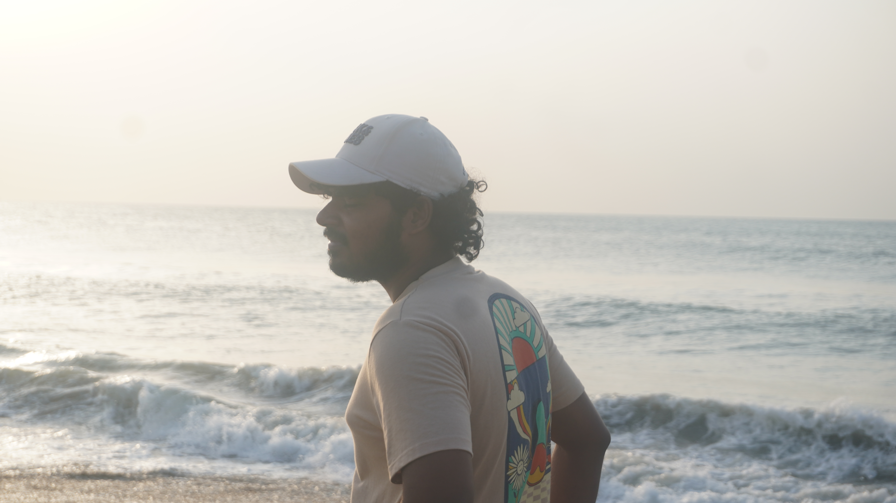

Golden Hour Profile
DSC04092.JPGEditorial side-profile capturing directional morning sunlight. High contrast between the subject's silhouette and the sparkling surf creates a cinematic depth.
43mm
f/5.6
1/320s
ISO 100